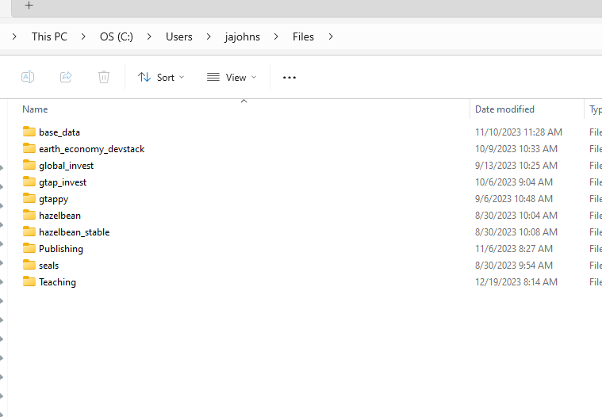
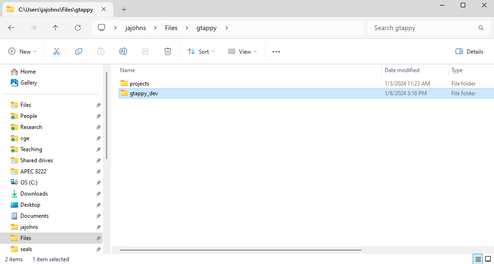
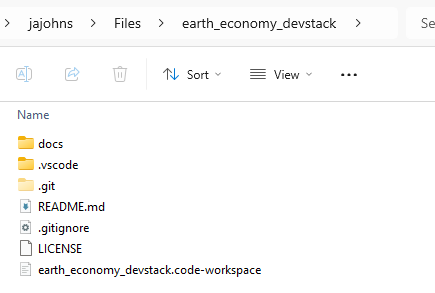
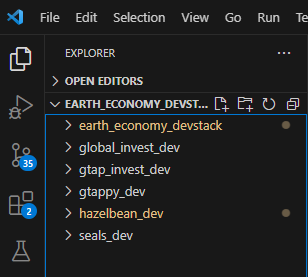
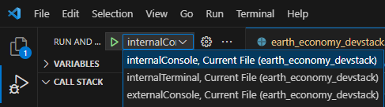

Overall Organization
Getting the earth_economy_devstack repository
Assuming you have already setup your python environment and installed VS Code, the first step is to clone all of the relevant repositories into the exact-right location. Throughout this documentation, we refer to “EE Spec”, or Earth-Economy Specification. This is simply the common conventions for things like naming files and organizing them so that it works for all participants. The EE Spec organization is to clone the earth_economy_devstack repository, available at https://github.com/jandrewjohnson/earth_economy_devstack, into your Users directory in a subdirectory called Files. The PC version is shown below.

To clone here, you can use the command line, navigate to the Files directory and use git clone https://github.com/jandrewjohnson/earth_economy_devstack . Alternatively you could use VS Code’s Command Pallate <ctrl-shift-s> Git Clone command and navigate to this repo. This repository configures VS Code to work well with the other EE repos and, for instance, defines launch-configurations that will always use the latest from github.
Get the other repositories
Next, create a folder for each of the five repositories in the Files directory, as in the picture above.
- hazelbean
- seals
- gtappy
- gtap_invest
- global_invest
Inside each of these folders, you will clone the corresponding repositories:
- https://github.com/jandrewjohnson/hazelbean_dev
- https://github.com/jandrewjohnson/seals_dev
- https://github.com/jandrewjohnson/gtappy_dev
- https://github.com/jandrewjohnson/gtap_invest_dev
- https://github.com/jandrewjohnson/global_invest_dev
If successful, you will have a new folder with _dev postpended, indicating that it is the repository itself (and is the dev, i.e., not yet public, version of it). For GTAPPy it should look like this:

All code will be stored in the _dev repository. All files that you will generate when running the libraries, conversely, will be in a different Projects directory as above (This will be discussed more in the ProjectFlow section).
Launching the devstack in VS Code
Navigate to the earth_economy_devstack directory. In there, you will find a file earth_economy_devstack.code-workspace (pictured below).

Double click it to load a preconfigured VS Code Workspace. You will know you have it all working if the explorer tab in VS Code shows all all SIX of the repositories.

Launch and VS Code Configurations
The earth_economy_devstack.code-workspace configures VS Code so that it includes all of the necessary repositories for EE code to run. Specifically, this means that if you pull the most recent version of each repository from Github, your code will all work together seamlessly. In addition to this file, you will see in the .vs_code directory there is a launch.json file. This file defines how to launch the python Debugger so that it uses the correct versions of the repositories. To launch a specific python file, first make it the active editor window, then open the debugger tab in VS Code’s left navbar, and in the Run and Debug dropdown box (pictured below) select the first run configuration, then hit the green Play triangle to launch the python file you had open. If all is setup correctly, your file you ran should be able to import all of the libraries in the devstack.
